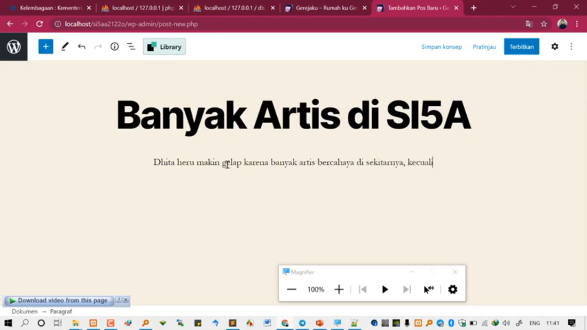

NIM : 1922500162
Nama : Amanda Monica
Kelompok : SI5A
cara memindahkan bahan pert 2 untuk melanjutkan pert 3
- jalankan XAMPP apache n mysql
- download hasil pert 2 dari telegram
- buat folder baru
- kemudian ekstrak file pert 2
- buka folder XAMPP lalu buka htdocs
- lalu edit nama file, tidak boleh sama dengan file sebelumnya
- file SQL buka dengan Sublime atau Notepad++
- lalu Ctrl+F dan ketik localhost/si5a
- kemudian blok localhost/si5a2122o
- lalu Ctrl+H lalu ganti dengan nama file yang sudah di edit (localhost/si5aa2122o)
- klik replace all
- kemudian di save
- kemudian import data dengan cara klik admin pada XAMPP MySQL dan klik import
- lalu choose file (SQL) dan klik go
- balik ke sublime, create database diganti dbsi5aa2122o(Ctrl+C, Ctrl+H,Ctrl+V)
- kemudian replace all dan di save
- cari file si5aa2122o kemudian buka wp-config.php (sublime)
- cari db nimnya, rubah dengan db_si5aa2122o
- buka localhost/si5aa2122o
Ada kaitannya dengan UTS (Posting) :
- tambah postingan baru (post lalu tambah baru)
- kemudian tambahkan judul
- tulisan bisa di bold, di kasih link, dst ( namanya editor blog secara visual)

cara menambahkan rata kiri kanan :
- ubah tulisan ke mode HTML
- class diganti dengan align="justify"
jika pada tabel mau menambahkan judul kolom :
- manfaatin penyintingan HTML (diubah)
| diganti dengan | -
jika pada tabel mau rata kiri kanan :
- tambahkan
atau
- tambahkan
| (mode CSS)
| | |